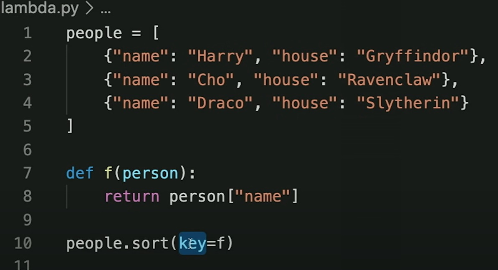

CS50's Web Programming with Python and JavaScript 2020

| CS50 Lecture Number | Lecture Content | Duration |
|---|---|---|
| Lecture 0 | HTML and CSS | 2 hrs, 3 mins & 31 seconds |
| Lecture 1 | Git | 53 minutes and 15 seconds |
| Lecture 2 | Python | 1 hour, 7 minutes and 41 seconds |
| Lecture 3 | Django | 1 hour, 39 minutes and 4 seconds |
| Lecture 4 | SQL, Models and Migrations | 1 hour, 54 minutes and 6 seconds |
| Lecture 5 | JavaScript | 1 hour, 51 minutes and 25 seconds |
| Lecture 6 | User Interfaces | 1 hour, 40 minutes and 14 seconds |
| Lecture 7 | Testing and CI/CD | 1 hour, 33 minutes and 58 seconds |
| Lecture 8 | Scalability and Security | 1 hour, 27 minutes and 45 seconds |
List of learnt systems and their breakdown so far
- HTML
- What was learnt?
- Basic HTML structure (Document Object Model)
- How to create a basic HTML page
- Forms
- Buttons
- Tables, table head, table rows and table data
- Ordered and unordered lists
- Nesting Structures
- Links to other webpages
- CSS/SCSS can be used to format a webpage, either through inline styling, header styling or using a stylesheet
- CSS/SCSS/Bootstrap
- Git system and Github
- Commands that are useful to know
- git clone
- git add
- git commit -am "message"
- git push (to push all changes to online repository)
- git pull (to pull all code from online repository)
- git branch (to check all different branches)
- git checkout -b "name of new branch" (to create a new branch)
- git checkout "name of existing branch" to switch to a different branch that is already created
- git merge "name of branch you want to merge with" to merge two branches if you are happy with the changes
- Concepts that were also learnt
- merge conflicts
- how to solve merge conflicts
- prevention of merge conflicts
- how to access code online through github and make small changes there
- How to use Github pages to allow the website to be hosted everywhere
- Python (Things that are absolutely new)
- Wrapper functions using the @ symbol
- How to use the sort funtion on nested data structures: Using a simple return funtion and the keyword key as follows:
- Try and exception handling -> kind of already understood this but the concept was explained really well here.
-
What is HTML? Hypertext Markup Language -- this is a standardised markup language primarily used in the building of the basic structures of a webpage.
-
Git is a software that helps track changes to a piece of code as well as allow for version control. It also allows collaboration between many people to create a big piece of software.
Github is a popular internet hosting site for Git functions (version control and software development).
-
I had already learnt quite a bit of Python but the following things were still new to me:
-
